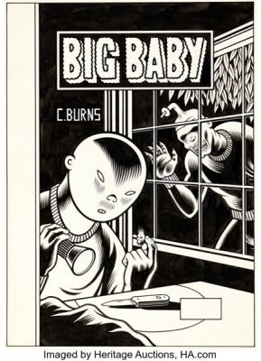

1986 original art
13sales tracked
$3,874,812total
$18,750median
$2,400,000top price
Sales by price
- $2,400,000Batman: The Dark Knight Returns #1
- $550,000Batman: The Dark Knight Returns (Joker's death) Two-Page Sequence
- $448,125Batman: The Dark Knight Returns #3 Page 10 (Batman & Robin splash)
- $288,000Batman: The Dark Knight Returns (Carrie Kelley as Robin) Story Page

$81,250Big Baby: Curse of the Molemen Cover- $21,250X-Men Annual #10 X-Babies Story Page 15
- $18,750The Avengers #265 Cover
- $18,125Captain America #320 Cover
- $17,500Batman: The Dark Knight #3 Superman Story Page 35 Production Color
- $10,937.50Teenage Mutant Ninja Turtles #7 Story Page 24
- $8,750The Amazing Spider-Man #274 Secret Wars II Back Cover Illustration
- $8,125Elektra: Assassin #2 Story Page 7
- $4,000Border Worlds Promotional Illustration